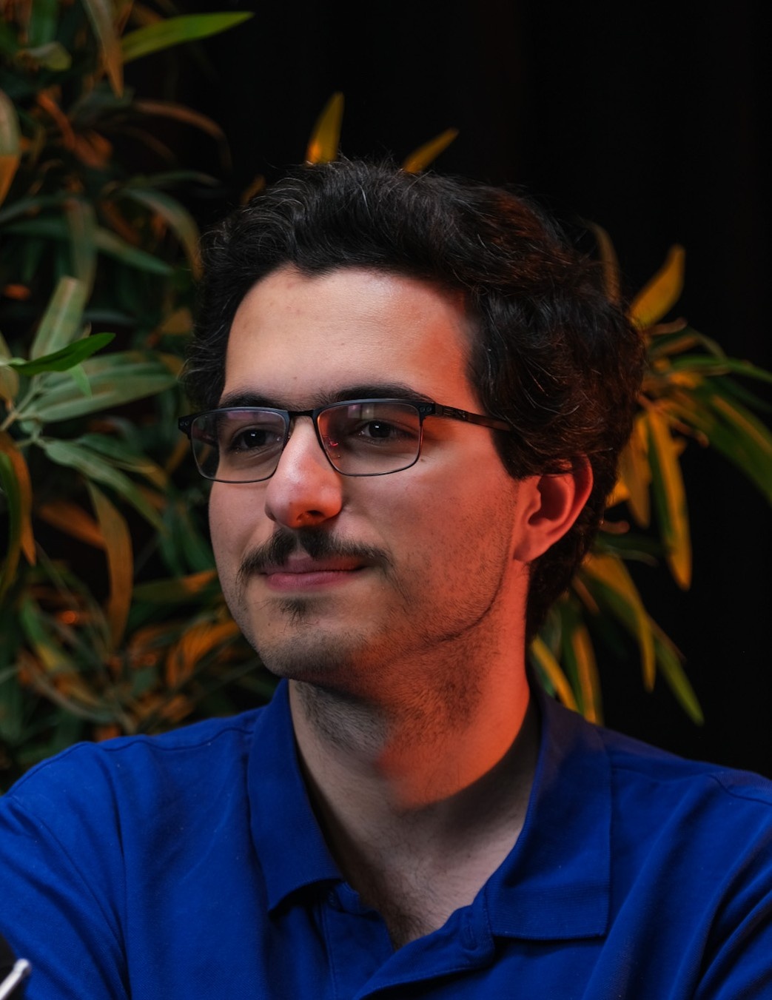

Salim Najib
PhD Student in Computer and Communication Sciences
École Polytechnique Fédérale de Lausanne (EPFL)
Email | Google Scholar | GitHub | EPFL profile | LinkedIn
Research
Particularly into information theory, security & privacy, fairness, and machine learning, more largely interested in all things mathy!
Publications
- Composition Theorems for Multiple Differential Privacy Constraints, IEEE International Symposium on Information Theory, 2026. Cemre Cadir, Salim Najib, Yanina Y. Shkel (alphabetical ordering). [arxiv version]
Supervision
- Omar Berrada, BSc semester project, Spring 2026 - Information-Theoretic Perspectives on Algorithmic Fairness
- This can be you! Feel free to get in touch with me and we can discuss :)
Teaching
- Teaching assistant in Signal Processing, Probability and Statistics, Statistical Signal and Data Processing Through Applications.
- Student assistant in Stochastic Models for Communication, Principles of Digital Communications, Functional Programming, Practice of Object-Oriented Programming.
- Pedagogical material for EPFL first-year courses here.